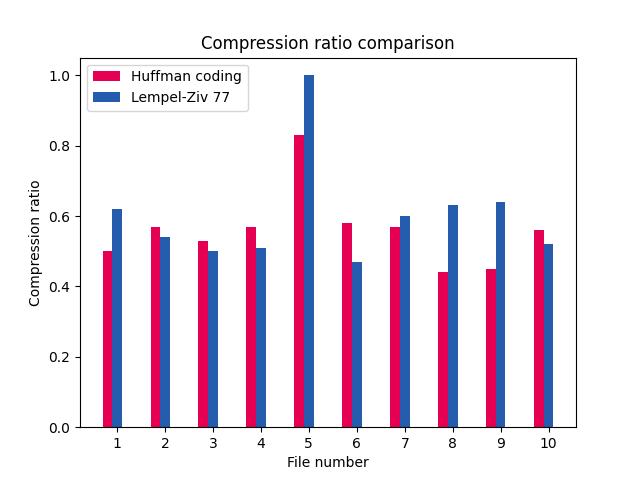
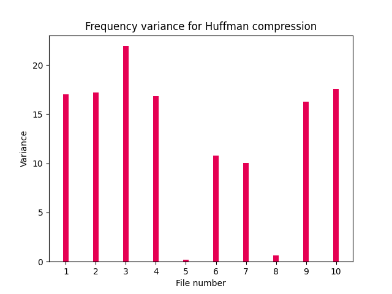
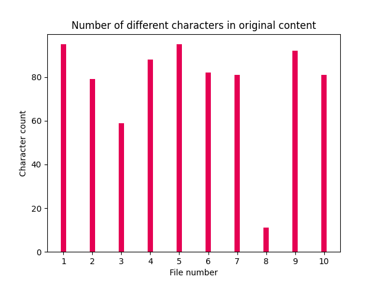
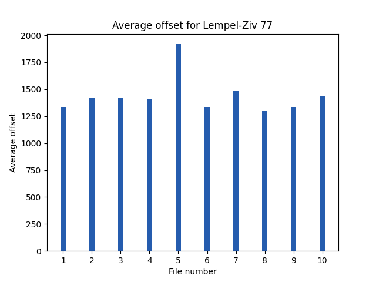

This document includes a report of the extended testing executed on 20.06.2022 22:21:20. The tables include information on compression and uncompression of test files. You can also find graphs that measure perfomance of compression algorithms based on selected measurers. Note that running the extended tests overwrites the report.
| # | Filename | Algorithm | Original size | Compressed size | Compression ratio | Compression time (s) | Pre-process (s) | Post-process (s) |
|---|---|---|---|---|---|---|---|---|
| 1 | seitseman-veljesta.txt | Huffman coding | 655004 | 346447 | 0.53 | 0.15 | 0.00 | 0.06 |
| 1 | seitseman-veljesta.txt | Lempel-Ziv 77 | 655004 | 339017 | 0.52 | 1.43 | 0.00 | 0.00 |
| 2 | gutenberg-project-ebook-2.txt | Huffman coding | 1007060 | 453621 | 0.45 | 0.25 | 0.00 | 0.07 |
| 2 | gutenberg-project-ebook-2.txt | Lempel-Ziv 77 | 1007060 | 648912 | 0.64 | 3.18 | 0.00 | 0.00 |
| 3 | random-printable-ascii-100-paragraphs.txt | Huffman coding | 74714 | 62115 | 0.83 | 0.02 | 0.00 | 0.01 |
| 3 | random-printable-ascii-100-paragraphs.txt | Lempel-Ziv 77 | 74714 | 81322 | 1.09 | 0.23 | 0.00 | 0.00 |
| 4 | gutenberg-project-ebook-1.txt | Huffman coding | 809246 | 460383 | 0.57 | 0.19 | 0.00 | 0.07 |
| 4 | gutenberg-project-ebook-1.txt | Lempel-Ziv 77 | 809246 | 432296 | 0.53 | 1.90 | 0.00 | 0.00 |
| 5 | natural-language-document-100-paragraphs.txt | Huffman coding | 53636 | 30839 | 0.57 | 0.01 | 0.00 | 0.01 |
| 5 | natural-language-document-100-paragraphs.txt | Lempel-Ziv 77 | 53636 | 33963 | 0.63 | 0.14 | 0.00 | 0.00 |
| 6 | gutenberg-project-ebook-3.txt | Huffman coding | 480294 | 241501 | 0.50 | 0.11 | 0.00 | 0.04 |
| 6 | gutenberg-project-ebook-3.txt | Lempel-Ziv 77 | 480294 | 302802 | 0.63 | 1.45 | 0.00 | 0.00 |
| 7 | first-100000-decimals-of-pi.txt | Huffman coding | 100002 | 43726 | 0.44 | 0.02 | 0.00 | 0.01 |
| 7 | first-100000-decimals-of-pi.txt | Lempel-Ziv 77 | 100002 | 63696 | 0.64 | 0.33 | 0.00 | 0.00 |
| # | Filename | Algorithm | Original size | Compressed size | Compression ratio | Uncompression time (s) | Pre-process (s) | Post-process (s) |
|---|---|---|---|---|---|---|---|---|
| 1 | seitseman-veljesta.huf | Huffman coding | 655004 | 346447 | 0.53 | 0.71 | 0.08 | 0.00 |
| 1 | seitseman-veljesta.lz | Lempel-Ziv 77 | 655004 | 339017 | 0.52 | 0.15 | 0.09 | 0.00 |
| 2 | gutenberg-project-ebook-2.huf | Huffman coding | 1007060 | 453621 | 0.45 | 0.97 | 0.11 | 0.00 |
| 2 | gutenberg-project-ebook-2.lz | Lempel-Ziv 77 | 1007060 | 648912 | 0.64 | 0.27 | 0.15 | 0.00 |
| 3 | random-printable-ascii-100-paragraphs.huf | Huffman coding | 74714 | 62115 | 0.83 | 0.12 | 0.01 | 0.00 |
| 3 | random-printable-ascii-100-paragraphs.lz | Lempel-Ziv 77 | 74714 | 81322 | 1.09 | 0.04 | 0.02 | 0.00 |
| 4 | gutenberg-project-ebook-1.huf | Huffman coding | 809246 | 460383 | 0.57 | 0.94 | 0.11 | 0.00 |
| 4 | gutenberg-project-ebook-1.lz | Lempel-Ziv 77 | 809246 | 432296 | 0.53 | 0.19 | 0.10 | 0.00 |
| 5 | natural-language-document-100-paragraphs.huf | Huffman coding | 53636 | 30839 | 0.57 | 0.07 | 0.01 | 0.00 |
| 5 | natural-language-document-100-paragraphs.lz | Lempel-Ziv 77 | 53636 | 33963 | 0.63 | 0.01 | 0.01 | 0.00 |
| 6 | gutenberg-project-ebook-3.huf | Huffman coding | 480294 | 241501 | 0.50 | 0.50 | 0.06 | 0.00 |
| 6 | gutenberg-project-ebook-3.lz | Lempel-Ziv 77 | 480294 | 302802 | 0.63 | 0.13 | 0.07 | 0.00 |
| 7 | first-100000-decimals-of-pi.huf | Huffman coding | 100002 | 43726 | 0.44 | 0.09 | 0.01 | 0.00 |
| 7 | first-100000-decimals-of-pi.lz | Lempel-Ziv 77 | 100002 | 63696 | 0.64 | 0.03 | 0.01 | 0.00 |
Below you can review visual comparison of test results. The labels indicate the number of the file in question. Filenames can be found with the number from the tables above.
Compression ratio is the size ratio between the uncompressed and compressed content. For instance a ratio of 0.5 would mean that the compressed file's size is 50 percent of the file size of the uncompressed file. For both Huffman Coding and Lempel-Ziv 77 the compression ratio is worse for files with random content. You can read more about the reasons for this in the 'Execution documentation'. Link can be found in the README.md.
The graph above describes the variance in the Huffman frequencies. As can be seen with the test content, the compression ratio is generally better with content that has a higher variance in the frequencies, but there are exceptions. You can read more about the reasons for this in the 'Execution documentation'. Link can be found in the README.md.
With a high character count the role of higher frequency is more visible. With a small character count (for instance files with just few different characters) a very high compression ratio can be achieved, even with low frequency.

The average lenght describes the length of the match found in the sliding window. When the average length is higher, the compression ratio is generally better.
